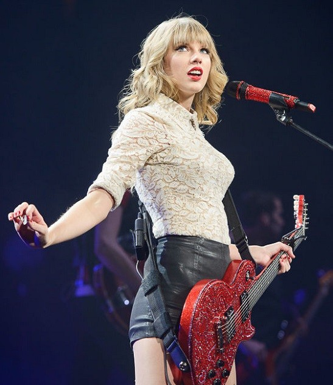

¿Quién es Taylor Swift?
Taylor Alison Swift (West Reading, Pensilvania, 13 de diciembre de 1989), más conocida como Taylor Swift, es una cantante, compositora y actriz estadounidense y una de las artistas con mayores ventas discográficas del mundo, con más de 114 millones de álbumes en formato físico.
Fearless Tour: Su primer tour
El Fearless Tour fue la primera gira de la cantante de música country Taylor Swift para promocionar su segundo álbum de estudio, Fearless. El tour incluyó actos de apertura por parte de artistas como Kellie Pickler y Gloriana. Justin Bieber se unió al tour en el Reino Unido a finales de 2009. Durante la gira, Taylor actuó con invitados especiales como John Mayer, Faith Hill y Katy Perry. El setlist estaba compuesto por 19 canciones en total. Además, fue la primera gira en la que Taylor Swift incorporó canciones como "Jump Then Fall", "Today Was a Fairytale" y "I'm Only Me When I'm With You".

Red Tour
El Red Tour fue la tercera gira de Taylor Swift para promover su cuarto álbum de estudio, Red. Comenzó el 13 de marzo de 2013 en Estados Unidos y culminó el 12 de junio de 2014 en Singapur.
Kanye west y taylor swift (los dos mas grandes)
Todo comenzó en 2009, en la gala de losPremios MTV. Esa tarde, una recién llegada Taylor Swift, con solo 20 años, recogió el premio al Mejor Video Femenino del Año por You Belong With Me. Emocionada y feliz, la cantante recibió su premio de manos de Shakira y del actor Taylor Lautner y, mientras agradecía el reconocimiento, el rapero y productor musical Kaney West irrumpió en el escenario desde la primera fila.

cantidad de premios que tiene taylor
Entre otros logros de Swift se incluyen 14 premios Grammy, un Emmy, 25 Billboard Music Awards, 40 American Music Awards, un premio Brit, 23 MTV Video Music Awards, 11 Country Music Association Awards, así como dos nominaciones al Globo de Oro.

Su ultimo album TTPD
The Tortured Poets Department (estilizado en mayúsculas, en español: «El departamento de poetas torturados») es el undécimo álbum de estudio de la cantautora estadounidense Taylor Swift lanzado el 19 de abril de 2024 a través de Republic Records.Consta de dieciséis canciones en su versión original, que fueron ampliadas a treinta y una en la versión The Anthology, siendo así considerado un doble álbum.

El impacto que tuvo taylor en el mundo
El impacto de Taylor Swift en el mundo es notable y abarca múltiples áreas. Como una de las artistas más exitosas de la música pop, ha vendido millones de álbumes y ha ganado numerosos premios. Su capacidad para innovar musicalmente y conectarse con los fans la ha convertido en una figura influyente en la cultura pop. Además, su activismo, filantropía y presencia en las redes sociales también contribuyen a su influencia global. En resumen, Taylor Swift tiene un impacto significativo en la música, la cultura popular, la moda y la conciencia social a nivel mundial.